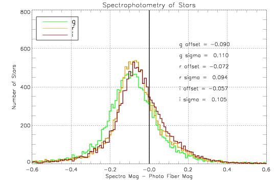
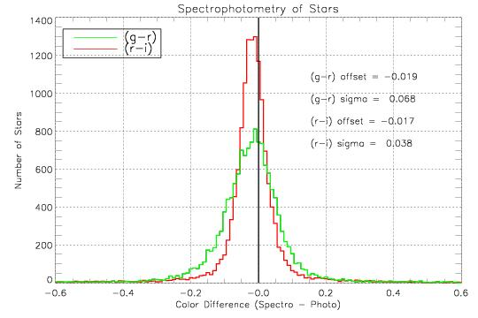
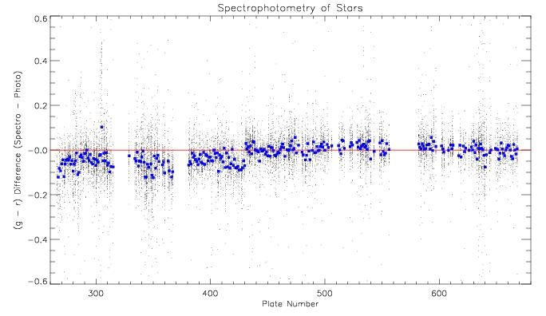
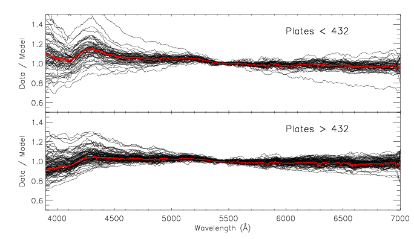

The Quality of the Spectrophotometry
Obtaining accurate spectrophotometry for fiber spectra is a challenging task
due to the small size of the fibers relative to the science targets. The SDSS
employs some unique techniques which are described on the
algorithms page.
Below we quantify the spectrophotometric quality of the data by comparing
the magnitudes of stars measured in the spectroscopy and the imaging data.
We utilize stars for this comparison because the spectrophotometry of galaxies
is adversely affected by the
smear procedure and
quasars are prone to be variable.
Synthetic g, r, and i magnitudes are computed from
the spectra using the
filter curves.
We use the
fiber magnitudes
measured by the photometric pipeline from the imaging data.

Comparison of g, r, & i magnitudes synthesized from the spectra with
fiber magnitudes measured from the
imaging data and corrected for galactic foreground reddening.
The net offset is in the sense that the spectra are too bright relative to
the imaging. This is because the
spectra were calibrated to match the r-band fiber magnitudes of standard
stars measured with an older version of the photometric pipeline. Older
versions of photo (pre v5_3) did not convolve the images to the 2" seeing
typical of spectroscopic observations before measuring the fiber magnitudes.
A more interesting test is to compare the colors of stars.

Comparison of the (g-r) and (r-i) colors of stars synthesized from the
spectra with colors measured from the imaging data and corrected for galactic
foreground reddening.
A slight offset is evident in the sense that the spectra are too blue by
a few percent relative to the imaging.
Since the spectrophotometric calibration is computed independently
for each half-plate
(320 fibers) it is instructive to
examine the variation as a function of plate number.

Comparison of the (g-r) and (r-i) colors of stars in the spectra and imaging
as a function of plate number. The small black points are individual
stars; the large blue points represent the median.
The discreet jump in the colors at plate 432 results from the fact that the
standard star target priorities were changed. Note that
the spectrophotometry of any individual object is only good to ~10%
on average, and may occasionally be discrepant by as much as 50%.
To evaluate the spectrophotometry on smaller wavelength scales, we make use
of white dwarf spectra. DA white dwarfs have simple hydrogen atmospheres
that can be accurately modeled. The strength and shape of the hydrogen
absorption features are used to identify DA white dwarfs and to select models
of the appropriate effective temperature and surface gravity. The division
of the data by the models reveals any spectrophotometric error.

Comparison of ~200 DA white dwarf spectra to models. The red line represents the median.
Clearly there are some ~15% residuals in the spectrophotometry near 4200
Angstroms. These features originate because of a slight mis-match between
our template F8 subdwarf and the actual standard stars observed.
Future improvements in the spectrophotometric calibration of the SDSS are
planned.
Last modified: Fri Jun 27 13:21:31 CDT 2003